Decapodes and the Discrete Exterior Calculus
Directly computable physics from exterior calculus
James Fairbanks
Department of Mechanical & Aerospace Engineering, University of Florida
MAE Fluids Seminar · 15 October 2026


PART ONE
Discrete Exterior Calculus
Exact Topology, Approximate
Geometry
2
Physics Is Written in Vector Calculus
Heat
\(\displaystyle \partial_t T = \nabla\cdot(k\,\nabla T)\)
Electromagnetism
\(\displaystyle \partial_t B = -\nabla\times E, \quad \nabla\cdot B = 0\)
\(\displaystyle \partial_t D = \nabla\times H - J\)
Incompressible flow
\(\displaystyle \partial_t u + (u\cdot\nabla)u = -\nabla p + \nu\,\Delta u\)
\(\displaystyle \nabla\cdot u = 0\)
What the operators satisfy
\[ \nabla\times\nabla f = 0, \qquad \nabla\cdot\nabla\times F = 0 \]
\[ \int_\Omega \nabla\cdot F \, dV = \oint_{\partial\Omega} F\cdot n \, dA \]
A discretization that breaks
these grows spurious modes and leaks mass, charge or energy, however high its order.
A good discretization keeps these identities exactly, not to some order.
3
Verified Against the Literature, at Scale
Kelvin–Helmholtz Instability
Rayleigh–Taylor in 3D
Rising Thermal Bubble
Verification Portfolio: Also verified against porous convection, Cahn–Hilliard on GPU, and multigrid convergence on generic subdivision.
4
Exterior Calculus in One Slide
\[ \Omega^0 \xrightarrow[\;\text{grad}\;]{d} \Omega^1 \xrightarrow[\;\text{curl}\;]{d} \Omega^2 \xrightarrow[\;\text{div}\;]{d} \Omega^3 \]
k
integrated over
for example
\(0\)
points
temperature, pressure, potential
\(1\)
curves
circulation, work of \(E\)
\(2\)
surfaces
flux, magnetic field \(B\)
\(3\)
volumes
mass, charge
Two facts.
\[ d \circ d = 0 \]
curl grad = 0 and div curl = 0, in one equation
\[ \int_M d\omega = \int_{\partial M} \omega \]
the fundamental theorem of calculus, Green, Stokes and Gauss, in one theorem
One operator replaces grad, curl and div; one theorem replaces four.
5
The Hodge Star Carries the Metric
\(\star\colon \Omega^k \to \Omega^{n-k}\) pairs each quantity with its dual: a gradient along a
curve with a flux across it.
\(d\): topology
Needs only what is the boundary of what. No lengths, no angles, no material constants.
Conservation and balance laws live here.
\(\star\): geometry
Carries all of the metric, and with a coefficient, the material.
Constitutive laws live here:
\(\phi = -k\star dC,\quad D = \varepsilon\star E\)
\(\phi = -k\star dC,\quad D = \varepsilon\star E\)
\[ \delta = (-1)^{k}\,\star^{-1} d\,\star \]
\[ \nabla^2 C = {\star}d{\star}d\,C = -\delta d\,C \]
\[ \partial_t C = k\,{\star}d{\star}d\,C \]
Physics splits into a metric-free part, \(d\), and a metric part, \(\star\).
6
Discrete Forms Are Cochains
A discrete \(k\)-form is one number per oriented \(k\)-simplex: the integral of the smooth
form over it, \(\langle R\,\omega, \sigma\rangle = \int_\sigma \omega\).
0-form: values at vertices
1-form: integrals along edges
2-form: integrals over faces
The edge numbers are differences of the vertex numbers: this 1-form is \(d\) of the 0-form.
Store integrals, not point samples, and the theorems of calculus hold exactly.
[1] A. N. Hirani. Discrete exterior calculus, PhD thesis, California Institute of Technology, 2003 · [2]
7
The Discrete Derivative Is the Coboundary
- ●\(d_1 d_0 = 0\) since \(\partial\partial = 0\): exact on any mesh
- ●\(d\,R = R\,d\): discretizing commutes with \(d\)
- ●Fluxes telescope: conservation to round-off
Definition. Stokes' theorem, taken as the definition:
\[ \langle d\omega, \sigma\rangle \triangleq \langle \omega, \partial\sigma\rangle, \quad\text{so}\quad d_k = \partial_{k+1}^{\top} \]
\[ d_0 = \begin{array}{c|ccc} & 1 & 2 & 3 \\ \hline [12] & -1 & 1 & 0 \\ [23] & 0 & -1 & 1 \\ [13] & -1 & 0 & 1 \end{array} \]
\[ d_1 = \begin{array}{c|ccc} & [12] & [23] & [13] \\ \hline [123] & 1 & 1 & -1 \end{array} \]
\(d\) is a signed incidence matrix: integers, no geometry, exact.
[1] A. N. Hirani. Discrete exterior calculus, PhD thesis, California Institute of Technology, 2003 · [2]
8
The Circumcentric Dual and the Diagonal Star
Each primal \(k\)-simplex \(\sigma\) has a dual \((n-k)\)-cell \(\star\sigma\), orthogonal to it, through the circumcenters.
\[ (\star_k)_{\sigma\sigma} = \frac{|\star\sigma|}{|\sigma|} \]
a diagonal matrix of length and area ratios
\(\star_0\)
area of the dual cell of a vertex
\(\star_1\)
\(\tfrac{|\star e|}{|e|} = \tfrac12(\cot\alpha + \cot\beta)\)
\(\star_2\)
one over the area of the triangle
Needs triangles with no obtuse angle; otherwise the circumcenter leaves the triangle.
Textbook DEC: all of the geometry is in diagonal matrices.
[1] A. N. Hirani. Discrete exterior calculus, PhD thesis, California Institute of Technology, 2003 · [2]
9
The Barycentric Dual and the Geometric Star
Dual vertices at the centroids: every dual cell stays inside the mesh, on any triangulation.
\[ \begin{aligned} \langle \star_1\omega, \star\sigma\rangle = \sum_{t \ni \sigma} \frac{|\star\sigma \cap t|}{|\sigma|}\bigl(&\sin\theta_t\,\omega(\sigma) \\ &+ \cos\theta_t \textstyle\sum_{e \neq \sigma} a_e\,\omega(e)\bigr) \end{aligned} \]
\(\star_0\)
a third of each adjacent triangle's area
\(\star_1\)
a \(3\times 3\) block per triangle, not diagonal
\(\star_2\)
one over the area of the triangle
\(d_0^{\top}\star_1 d_0\) is the cotangent stiffness matrix exactly, obtuse triangles included.
What our solvers use: the geometry costs one sparse factorization.
[3] R. Ayoub, A. Hamdouni, and D. Razafindralandy. Communications on Pure and Applied Analysis, 20(6):2155-2185, 2021
10
The Discrete de Rham Complex
primal: vertices, edges, triangles
\[ \begin{CD}
\Omega^0 @>{d_0}>> \Omega^1 @>{d_1}>> \Omega^2 \\
@V{\star_0}VV @V{\star_1}VV @V{\star_2}VV \\
\tilde\Omega^2 @<{\tilde d_1}<< \tilde\Omega^1 @<{\tilde d_0}<< \tilde\Omega^0
\end{CD} \]
dual: cells, edges, vertices
Rows: topology, exact
\[ \tilde d_0 = d_1^{\top}, \qquad \tilde d_1 = -d_0^{\top} \]
\(d\circ d = 0\) along both rows, in integers
Columns: geometry, approximate
The Hodge stars are the only arrows between the rows, and the only place the metric enters.
Around the first square:
\[ \nabla^2 = \star_0^{-1}\, \tilde d_1\, \star_1\, d_0 \]
Every operator is a path through this diagram.
11
Operators Are Products of Sparse Matrices
\[ \nabla^2 \;\longmapsto\; L = -\star_0^{-1}\, d_0^{\top}\, \star_1\, d_0 \]
\[ (L\,u)_i = \frac{1}{|\star v_i|} \sum_{j \sim i} \tfrac12\left(\cot\alpha_{ij} + \cot\beta_{ij}\right)(u_j - u_i) \]
- ●The cotangent Laplacian, with the stiffness matrix of linear finite elements
- ●Assembled once per mesh; a time step is a few sparse matrix-vector products
- ●The same code on triangles, tetrahedra, surfaces such as the sphere, and rectilinear grids
Set every ⋆ = I.
What remains is \(d_0^\top d_0\), the graph Laplacian. Put restriction maps in place of the \(\pm 1\) entries of \(d_0\) and it is the sheaf Laplacian \(\delta^\top\delta\).
Each operator is a short product of sparse matrices; only the stars know the mesh's shape.
[2] M. Desbrun, A. N. Hirani, M. Leok, and J. E. Marsden. arXiv:math/0508341, 2005
12
What Is Exact and What Is Approximate
Exact, from topology
- ●\(d \circ d = 0\)
- ●Stokes' theorem on every chain of cells
- ●Conservation: what leaves one cell enters its neighbor
- ●Cohomology: harmonic forms count the holes of the mesh
Approximate, from geometry
- ●The Hodge star \(\star\); positive weights need a Delaunay mesh (in 2D)
- ●The wedge product \(\wedge\), associative only on closed forms
- ●Interior product \(\iota_X\) and Lie derivative \(\mathcal{L}_X\)
- ●Sharp \(\sharp\) and flat \(\flat\), between forms and vector fields
Topology is exact; only the metric is approximated.
[1] A. N. Hirani. Discrete exterior calculus, PhD thesis, California Institute of Technology, 2003 · [2, 4]
13
What Structure Preservation Prevents
Structure DEC keeps
Broken, it gives
Example
\(d_1 d_0 = 0\): curl grad \(= 0\)
spurious vorticity
a fluid at rest spins up
\(\operatorname{div}\operatorname{grad}\) sees every mode
checkerboard pressure
the pressure equation
\(-\operatorname{div}\) is the adjoint of grad
energy growth, instability
a pressure pulse
\(\dim H^1\) = number of holes
missing circulation
lift on cylinders
Each of these flow-solver failures is a broken identity.
14
Standard Fixes in CFD
Year
Failure
Where it shows up
Standard patch
In DEC
1965
Checkerboard pressure
collocated finite volumes [5]; equal-order finite elements [6]
staggered MAC grids [7]; Rhie-Chow interpolation [8]; PSPG [9]
\(p\) on vertices, \(u\) on edges
1992
Spurious currents
surface tension in a static droplet [10]; the lake at rest [11]
balanced-force algorithms [12]; well-balanced schemes
\(d_1 d_0 = 0\)
1966
Energy growth
long-time weather and turbulence runs [13]
summation-by-parts operators [14, 15]; artificial dissipation
\(-\operatorname{div} = \operatorname{grad}^*\)
1967
Missing circulation
potential flow past lifting bodies
panel methods with a Kutta condition [16]; wake cuts
\(H^1\), computed
The common framework: structure-preserving discretization [17, 18, 4]
Each patch restores one identity by hand; DEC keeps all four.
15
Spurious Currents in a Fluid at Rest
\[ \begin{aligned} \partial_t u + \operatorname{grad} p &= \nu\,\Delta u - \operatorname{grad}\Phi \\ \operatorname{div} u &= 0 \end{aligned} \]
exact solution: \(u = 0\), \(p = -\Phi\)
Take the curl
\[ \partial_t \omega = \nu\,\Delta\omega - \operatorname{curl}\operatorname{grad}\Phi \]
DEC: \(d_1 d_0 \Phi = 0\). Collocated: not zero, so vorticity is forced.
\(d_1 d_0 = 0\): no spurious vorticity, and mass conserved cell by cell.
16
No Checkerboards in the Pressure Equation
Take the divergence:
\[ \partial_t u + \operatorname{grad} p = f, \quad \operatorname{div} u = 0 \quad\Longrightarrow\quad \operatorname{div}\operatorname{grad} p = \operatorname{div} f \]
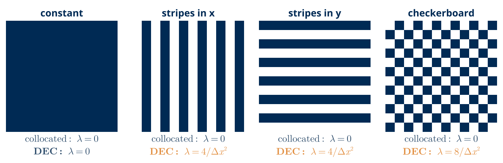
Collocated (top): \(p, u\) at the same nodes, \((\operatorname{grad} p)_i = (p_{i+1} - p_{i-1})/2\Delta x\). Then \(\operatorname{div}\operatorname{grad}\) reaches \(p_{i\pm 2}\), and a checkerboard has \(\operatorname{grad} p = 0\).
DEC (bottom): \(p\) on vertices, \(u\) on edges; \(\operatorname{grad} = d_0\), \(\operatorname{div} = -\star_0^{-1} d_0^{\top} \star_1\), so \(\operatorname{div}\operatorname{grad}\) is \((p_{i+1} - 2p_i + p_{i-1})/\Delta x^2\).
With \(p\) on vertices and \(u\) on edges, the pressure equation sees every mode.
[7] F. H. Harlow and J. E. Welch. The Physics of Fluids, 8(12):2182-2189, 1965
17
Energy Growth in a Pressure Pulse
\[ \begin{aligned} \partial_t u &= -\operatorname{grad} p \\ \partial_t p &= -c^2 \operatorname{div} u \end{aligned} \]
from rest; energy \(\tfrac12\!\int |u|^2 + p^2/c^2\) is conserved
DEC: \(-\operatorname{div} = \operatorname{grad}^*\) and \(d_1 d_0 = 0\). Energy conserved, no vorticity.
Collocated: about 600 growing modes. Energy grows nearly \(10^5\)-fold by \(t = 0.6\).
The collocated energy grows exponentially; the DEC energy is conserved.
18
Cohomology Counts the Holes
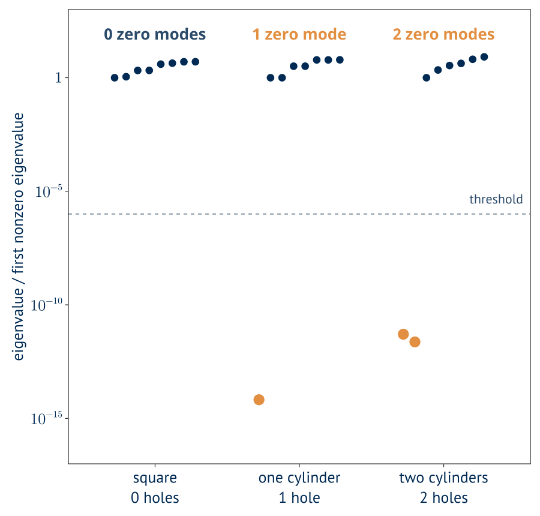
closed
\(d_1 u = 0\): no vorticity
exact
\(u = d_0\phi\): a gradient
\[ H^1 = \frac{\ker d_1}{\operatorname{im} d_0}, \qquad \dim H^1 = \#\text{holes} \]
closed flows that are not gradients, counted by integer linear algebra
Its harmonic representative also has \(d_0^{\top}\star_1 h = 0\): it is curl-free and divergence-free, and carries the circulation.
Closed but not exact: the flows that circulate around obstacles.
19
Circulation Around a Hole
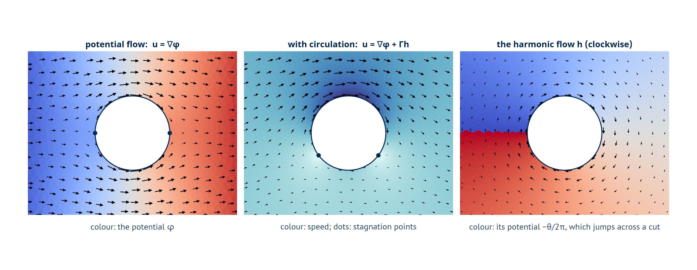
The flows no gradient can reach:
\[ \dim\ker d_1 - \operatorname{rank} d_0 = \#\text{holes} \]
DEC computes the circulation that potential flow has to add by hand.
20
Flow Past Two Cylinders
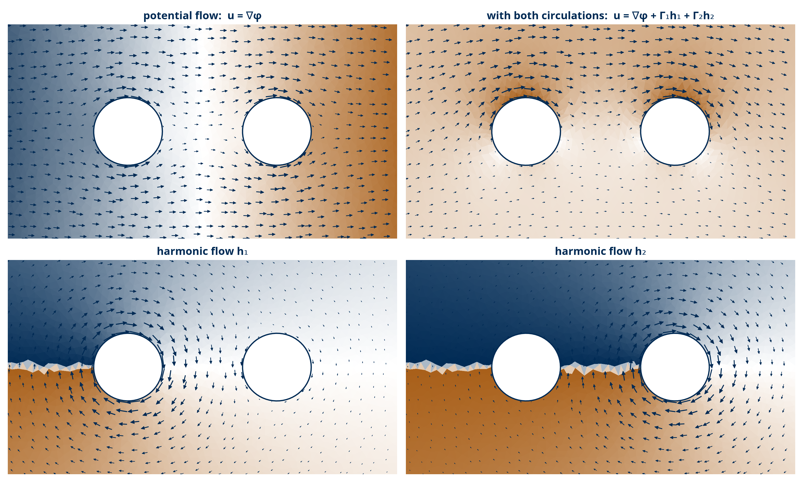
\[ \dim H^1 = 2, \qquad u = \nabla\phi + \Gamma_1 h_1 + \Gamma_2 h_2 \]
each \(h_k\): circulation 1 around its cylinder, 0 around the other
One free circulation per hole, found by linear algebra.
21
The Hodge Decomposition
simply connected\(u = \nabla\phi + \nabla\times\psi\)
with holes\(u = \nabla\phi + \nabla\times\psi + h\), with \(\nabla\cdot h = 0\), \(\nabla\times h = 0\), \(h\cdot n = 0\): one \(h\) per hole
DEC\(u = d_0\phi + \star_1^{-1} d_1^{\top}\star_2\,\psi + h\), three pieces orthogonal in the \(\star_1\) inner product
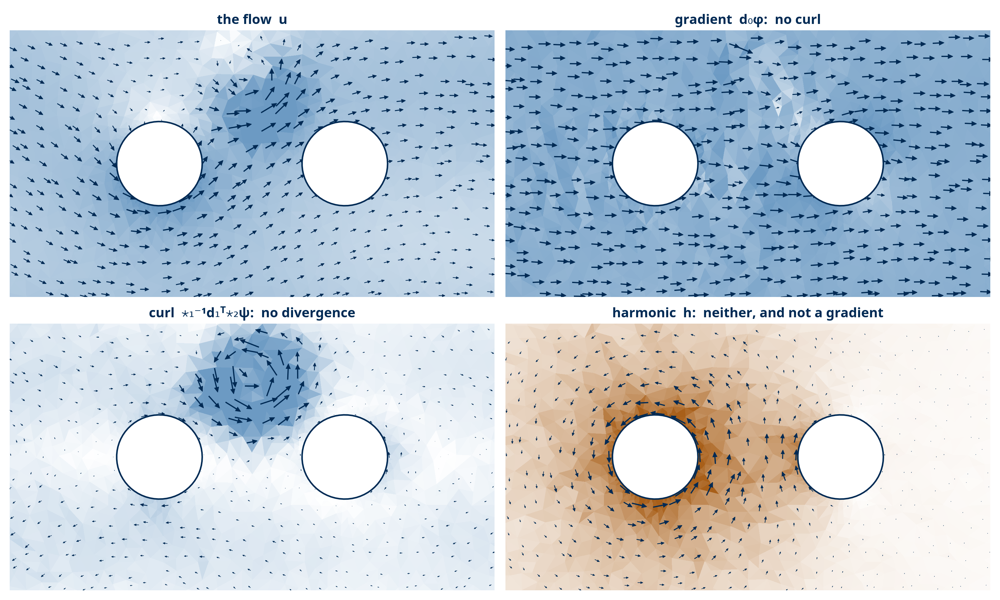
With holes, a third piece appears that neither curl nor div can see.
22
A Dictionary from Vector Calculus
Vector calculus
Exterior calculus
DEC, on a 3D mesh
\(\nabla f\)
\(df\)
\(d_0\)
\(\nabla\times F\)
\(\star\, dF^\flat\)
\(\star_2\, d_1\)
\(\nabla\cdot F\)
\(\star\, d \star F^\flat\)
\(-\star_0^{-1} d_0^\top \star_1\)
\(\nabla^2 f\)
\(\star\, d \star d f\)
\(-\star_0^{-1} d_0^\top \star_1 d_0\)
\((u\cdot\nabla)\, f\)
\(\mathcal{L}_u f = \iota_u\, df = \star(u^\flat \wedge \star df)\)
\(\star_0^{-1}(u^\flat \wedge \star_1 d_0 f)\)
Every operator is a short word in \(d\), \(\star\) and \(\wedge\): the words a Decapode records.
23
Compressible Navier–Stokes
Mass
\(\displaystyle \partial_t \rho + \textcolor{#E28F41}{\nabla\cdot U} = 0\)
Momentum
\(\displaystyle \partial_t U + \textcolor{#E28F41}{\nabla\cdot(u \otimes U)} = -\nabla P(\Theta) + \rho\, g + \mu\, \Delta u\)
Potential temperature
\(\displaystyle \partial_t \Theta + \textcolor{#E28F41}{\nabla\cdot(u\, \Theta)} = \kappa\, \Delta \Theta\)
\(U = \rho\, u\): momentum
\(\Theta = \rho\, \theta\): potential temperature density
Newtonian fluid, simplified viscous term
The hard terms are the advection terms: a divergence of a flux in every equation.
24
Compressible Navier–Stokes in Exterior Calculus
\[ \begin{aligned}
\partial_t \rho + \star d \star U &= 0 \\[6pt]
\partial_t U + U \wedge \star d \star u + \mathcal{L}_u U - \tfrac{1}{2}\, \rho\, d \star (u \wedge \star u) &= -dP(\Theta) + \rho\, g + \mu\, \Delta u \\[6pt]
\partial_t \Theta + \Theta \wedge \star d \star u + \mathcal{L}_u \Theta &= \kappa\, \Delta \Theta
\end{aligned} \]
Compression
\(U \wedge \star d \star u\), the divergence of the flow
Self-advection
\(\mathcal{L}_u U = \iota_u\, dU + d\, \iota_u U\), by Cartan's formula
Energy gradient
\(-\tfrac{1}{2}\, \rho\, d\, |u|^2\), the kinetic energy
Every advection term is a wedge: current work focuses on improving the numerics of wedges.
25
Lid-Driven Cavity Flow, Against a Benchmark
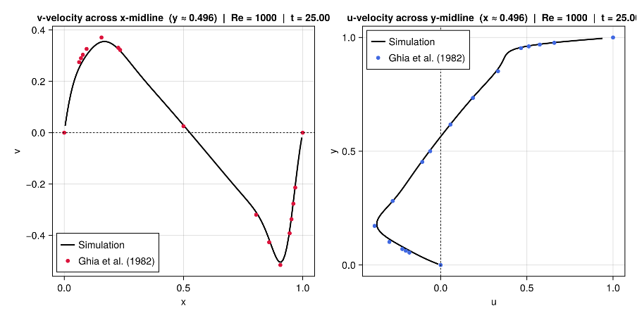
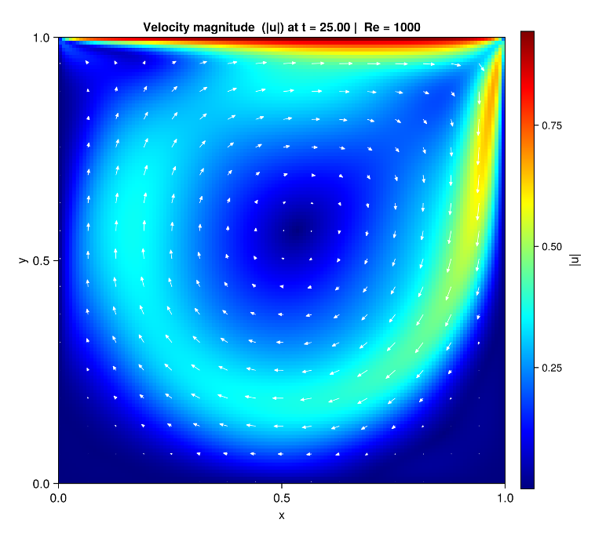
- ●The generated simulator lands on the benchmark points across both midlines, and recovers the primary vortex with its corner recirculations
- ●Quantitative agreement, from a specification with no hand-written discretization
[19] U. Ghia, K. N. Ghia, and C. T. Shin. Journal of Computational Physics, 48(3):387–411, 1982
26
Lid-Driven Cavity at High Reynolds Number
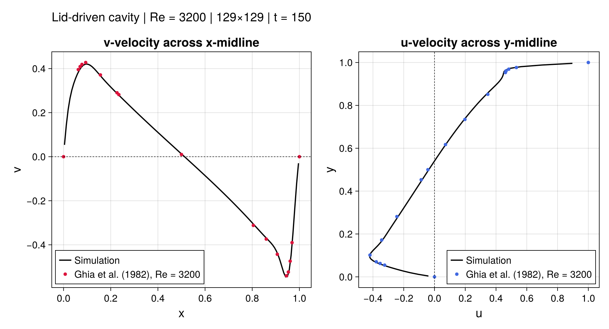
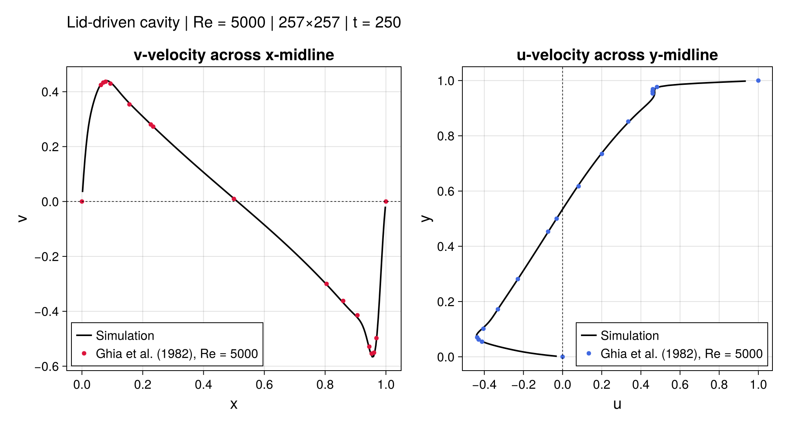
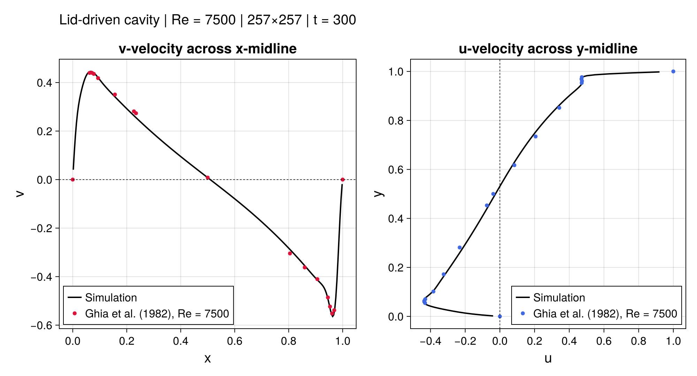
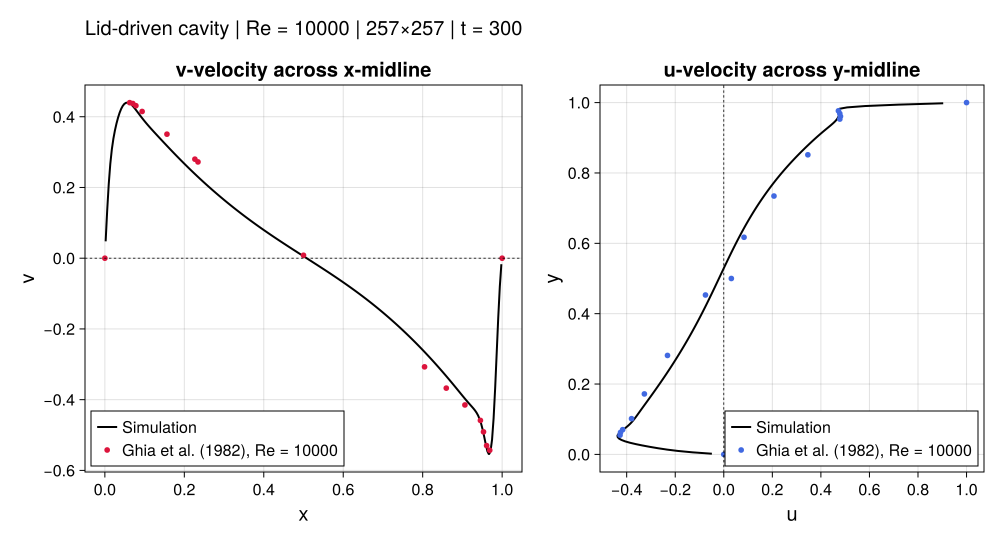
The benchmark holds from Re = 3200 to Re = 10,000.
[19] U. Ghia, K. N. Ghia, and C. T. Shin. Journal of Computational Physics, 48(3):387–411, 1982
27
Taylor–Green Vortex in 3D
The same operators run in 3D, from a smooth start into small-scale vortices.
28
Sharp Fronts and Shear Layers
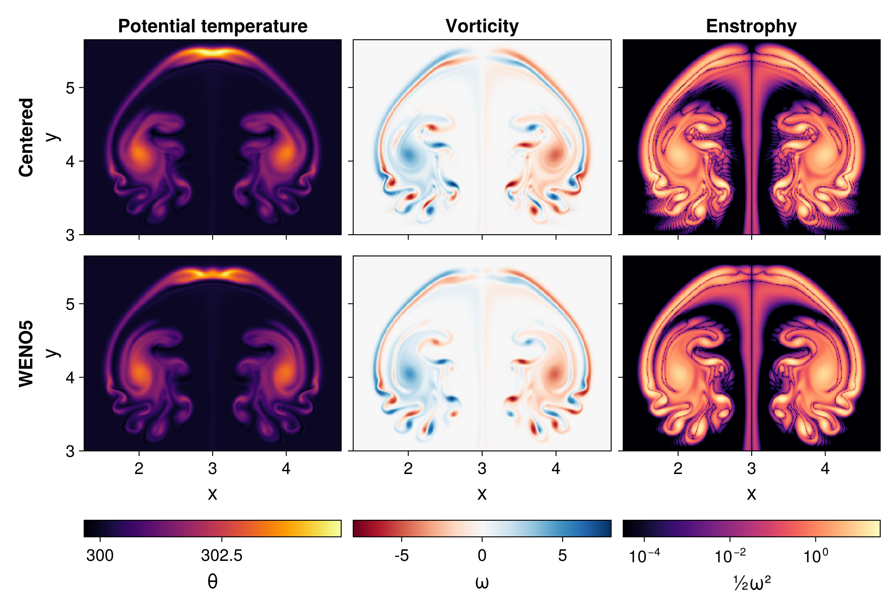
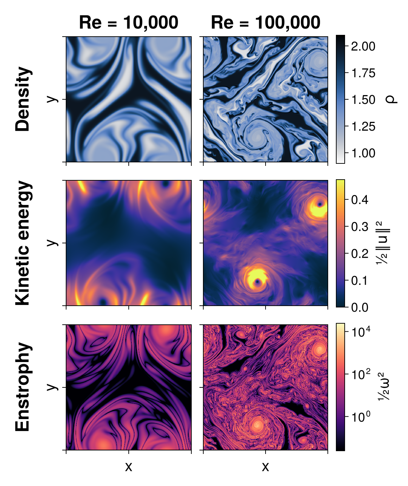
A better wedge removes the ringing without smearing the structure.
29
PART TWO
Computational Physics
Directly Simulating Multiphysics
Systems
from Hierarchical Specifications
WITH

Luke Morris

Evan Patterson

George Rauta

Matthew Cuffaro
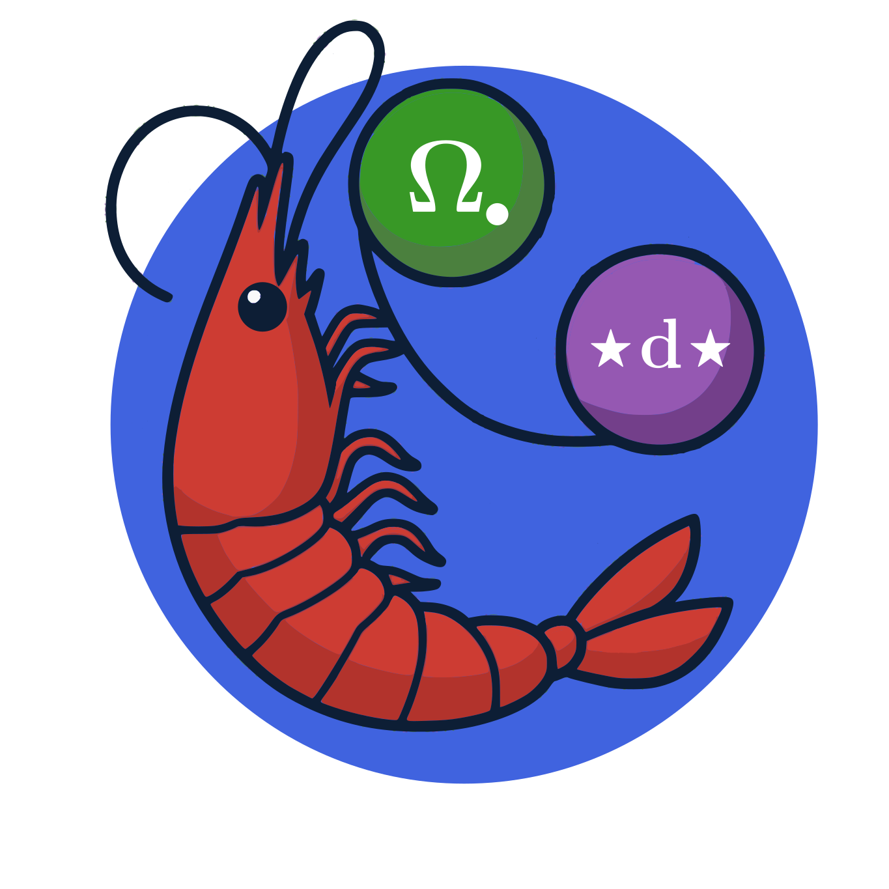
30
Encoding Equations as Diagrams
- ●Vertices carry a variable and the space it lives in
- ●Edges carry the differential operators
- ●A physical theory becomes a labelled graph, and a graph is something a program can read
The same content, in a form that supports type checking, rewriting, and composition.
[20] L. Morris, A. Baas, J. Arias, M. Gatlin, E. Patterson, and J. Fairbanks. Journal of Computational Science, 81:102345, 2024
31
Writing and Composing Decapodes in Julia
Diffusion = @decapode begin
(C, Ċ)::Form0
ϕ::Form1
ϕ == k * d(C)
Ċ == ⋆(d(⋆(ϕ)))
∂ₜ(C) == Ċ
end
DiffusionAdvection = @relation (C, V) begin
diffusion(C, ϕ₁)
advection(C, V, ϕ₂)
superposition(ϕ₁, ϕ₂, ϕ, C)
end
sim = evalsim(apex(oapply(DiffusionAdvection, physics)))
f = sim(mesh, generate)
(C, Ċ)::Form0
declares which differential
forms the variables are
d, ⋆
exterior derivative and Hodge
star, not finite differences
@relation
the wiring diagram, written
as text
evalsim
generates the simulator from
the composite
The macro is the syntax; the diagram is what it denotes.
[20] L. Morris, A. Baas, J. Arias, M. Gatlin, E. Patterson, and J. Fairbanks. Journal of Computational Science, 81:102345, 2024 · [21]
32
From Advection–Diffusion to Porous Media Convection
Porous_Convection = @decapode begin
(λ_ρ₀Cp, αρ₀, k_ηf, ϕ)::Constant
(P, T, Adv, bound_T, bound_Ṫ)::Form0
(g, qD)::Form1
bound_T == adiabatic(T)
# Darcy flux
ρ == g ∧ (αρ₀ * bound_T)
P == Δ⁻¹(δ(ρ))
qD == -k_ηf * (d(P) - ρ)
Adv == ⋆(interpolate(∧ᵈᵖ₁₁(⋆(d(bound_T)), qD)))
Ṫ == -1/ϕ * Adv + λ_ρ₀Cp * Δ(bound_T)
bound_Ṫ == tb_bc(Ṫ)
∂ₜ(T) == bound_Ṫ
end
Real multiphysics fits on one screen, and the compiler checks it.
33
Building Multiphysics with Wiring Diagrams
1. Physical Principles (Decapodes)

2. Composition Syntax (Wiring Diagram)
Wiring Diagram Semantics
Junctions: Shared variable domains (e.g. ambient space)
Boxes: Physical sub-theories (diffusion, advection)
Wires: Equality constraints on shared ports
Outer Ports: Interface to next level of hierarchy
3. Composed Multiphysics Model

[20] L. Morris, A. Baas, J. Arias, M. Gatlin, E. Patterson, and J. Fairbanks. Journal of Computational Science, 81:102345, 2024 · [22]
34
From Diagram to Simulator
1 · SPECIFY
@decapode
Variables declared as forms; equations in \(d\), \(\star\), \(\partial_t\). The result is a diagram, stored as data.
2 · INFER
infer_types!
Degree and primal or dual flow along the operators. A 1-form added to a 2-form is an error here.
3 · RESOLVE
resolve_overloads!
Generic \(d\) and \(\star\) become \(d_0\), \(\star_1\), dual \(d\); composites fuse into one matrix.
4 · COMPILE
gensim
A Julia function; its matrices are assembled once on a mesh from CombinatorialSpaces.jl.
5 · SOLVE
ODEProblem
Any solver from OrdinaryDiffEq.jl integrates it, on the CPU or the GPU.
The type system is exterior calculus: a mismatched degree is caught before any matrix is built.
[20] L. Morris, A. Baas, J. Arias, M. Gatlin, E. Patterson, and J. Fairbanks. Journal of Computational Science, 81:102345, 2024 · [21]
35
What We Are Still Checking
Agrees
- ●2D cavity flow, against Ghia et al. up to Re = 10,000
- ●Rising bubble: spurious oscillations reduced by the WENO5 wedge
- ●Kelvin–Helmholtz: 2D turbulence at Re = 100,000
Open
- ●Rayleigh–Taylor growth rates are slower than linear theory
- ●3D cavity flow needs proper lid conditions
- ●Rising bubble, rerun in the published benchmark's setup
- ●Is the 3D Taylor–Green flow turbulent? Check its statistics
Left: agreement with benchmarks. Right: open discrepancies.
36
DEC in Our Other Work
Compressible flow on grids
Low-Mach Navier–Stokes with DEC on rectilinear grids, where it is a staggered scheme by construction [23].
Safety on a mesh
Whitney forms turn a safe set given on a mesh into a control barrier function [24].
Coordination on a graph
The sheaf Laplacian \(\delta^\top\delta\) is DEC with restriction maps in place of the Hodge stars [25, 26].
The same \(d\) and \(\star\) appear in our flow, safety and coordination work.
37
Decapodes: Directly Computable Physics
Discrete exterior calculus supplies the operators; the diagram supplies the equations. The specification
compiles to a simulator with no hand-written discretization.
- ●Specifications are data: type-checked, rewritten, and composed before compilation
- ●Custom operators supply their own matrices against any mesh
- ●Generic subdivision gives geometric multigrid for free
- ●Sparse DEC operators map cleanly onto GPUs
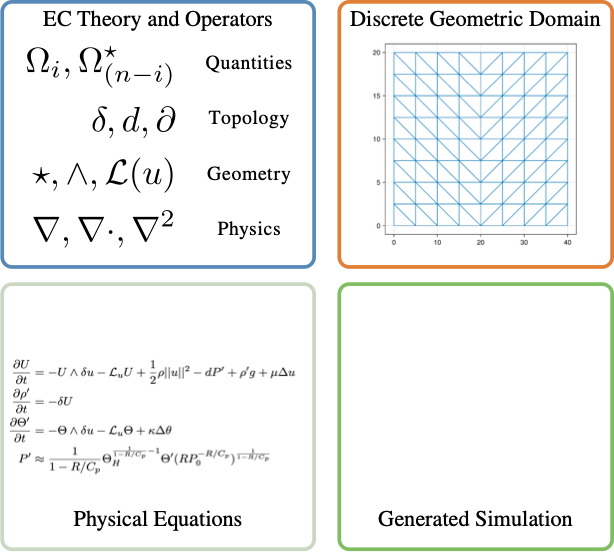
Built on CombinatorialSpaces.jl, part of the AlgebraicJulia ecosystem.
[20] L. Morris, A. Baas, J. Arias, M. Gatlin, E. Patterson, and J. Fairbanks. Journal of Computational Science, 81:102345, 2024 · [21]
38
References
- [1]A. N. Hirani. Discrete exterior calculus. PhD thesis, California Institute of Technology, 2003.
- [2]M. Desbrun, A. N. Hirani, M. Leok, and J. E. Marsden. Discrete exterior calculus. arXiv:math/0508341, 2005.
- [3]R. Ayoub, A. Hamdouni, and D. Razafindralandy. A new Hodge operator in discrete exterior calculus. Application to fluid mechanics. Communications on Pure and Applied Analysis, 20(6):2155-2185, 2021. doi:10.3934/cpaa.2021062.
- [4]D. N. Arnold, R. S. Falk, and R. Winther. Finite element exterior calculus, homological techniques, and applications. Acta Numerica, 15:1–155, 2006.
- [5]S. V. Patankar and D. B. Spalding. A calculation procedure for heat, mass and momentum transfer in three-dimensional parabolic flows. International Journal of Heat and Mass Transfer, 15(10):1787-1806, 1972. doi:10.1016/0017-9310(72)90054-3.
- [6]F. Brezzi. On the existence, uniqueness and approximation of saddle-point problems arising from Lagrangian multipliers. Revue française d'automatique, informatique, recherche opérationnelle. Analyse numérique, 8(R2):129-151, 1974. doi:10.1051/m2an/197408R201291.
- [7]F. H. Harlow and J. E. Welch. Numerical calculation of time-dependent viscous incompressible flow of fluid with free surface. The Physics of Fluids, 8(12):2182-2189, 1965. doi:10.1063/1.1761178.
- [8]C. M. Rhie and W. L. Chow. Numerical study of the turbulent flow past an airfoil with trailing edge separation. AIAA Journal, 21(11):1525-1532, 1983. doi:10.2514/3.8284.
- [9]T. J. R. Hughes, L. P. Franca, and M. Balestra. A new finite element formulation for computational fluid dynamics: V. Circumventing the Babuška-Brezzi condition. Computer Methods in Applied Mechanics and Engineering, 59(1):85-99, 1986. doi:10.1016/0045-7825(86)90025-3.
- [10]J. U. Brackbill, D. B. Kothe, and C. Zemach. A continuum method for modeling surface tension. Journal of Computational Physics, 100(2):335-354, 1992. doi:10.1016/0021-9991(92)90240-Y.
- [11]A. Bermúdez and M. E. Vázquez. Upwind methods for hyperbolic conservation laws with source terms. Computers & Fluids, 23(8):1049-1071, 1994. doi:10.1016/0045-7930(94)90004-3.
- [12]M. M. Francois, S. J. Cummins, E. D. Dendy, D. B. Kothe, J. M. Sicilian, and M. W. Williams. A balanced-force algorithm for continuous and sharp interfacial surface tension models within a volume tracking framework. Journal of Computational Physics, 213(1):141-173, 2006. doi:10.1016/j.jcp.2005.08.004.
- [13]A. Arakawa. Computational design for long-term numerical integration of the equations of fluid motion: Two-dimensional incompressible flow. Part I. Journal of Computational Physics, 1(1):119-143, 1966. doi:10.1016/0021-9991(66)90015-5.
39
References (continued)
- [14]H.-O. Kreiss and G. Scherer. Finite element and finite difference methods for hyperbolic partial differential equations. Mathematical Aspects of Finite Elements in Partial Differential Equations, pp. 195-212, Academic Press, 1974. doi:10.1016/B978-0-12-208350-1.50012-1.
- [15]B. Strand. Summation by parts for finite difference approximations for d/dx. Journal of Computational Physics, 110(1):47-67, 1994. doi:10.1006/jcph.1994.1005.
- [16]J. L. Hess and A. M. O. Smith. Calculation of potential flow about arbitrary bodies. Progress in Aerospace Sciences, 8:1-138, 1967. doi:10.1016/0376-0421(67)90003-6.
- [17]K. S. Yee. Numerical solution of initial boundary value problems involving Maxwell's equations in isotropic media. IEEE Transactions on Antennas and Propagation, 14(3):302-307, 1966. doi:10.1109/TAP.1966.1138693.
- [18]P. B. Bochev and J. M. Hyman. Principles of mimetic discretizations of differential operators. Compatible Spatial Discretizations, The IMA Volumes in Mathematics and its Applications 142:89-119, Springer, 2006. doi:10.1007/0-387-38034-5_5.
- [19]U. Ghia, K. N. Ghia, and C. T. Shin. High-Re solutions for incompressible flow using the Navier–Stokes equations and a multigrid method. Journal of Computational Physics, 48(3):387–411, 1982.
- [20]L. Morris, A. Baas, J. Arias, M. Gatlin, E. Patterson, and J. Fairbanks. Decapodes: a diagrammatic tool for representing, composing, and computing spatialized partial differential equations. Journal of Computational Science, 81:102345, 2024.
- [21]AlgebraicJulia. CellularSheaves.jl, Decapodes.jl, and CombinatorialSpaces.jl. algebraicjulia.github.io
- [22]E. Patterson, O. Lynch, and J. Fairbanks. Categorical data structures for technical computing. Compositionality, 4(5), 2022.
- [23]G. Rauta, J. Fairbanks, and L. Kunzendorf. Low-Mach compressible Navier–Stokes using discrete exterior calculus on rectilinear grids. WCCM–ECCOMAS, Munich, 2026, accepted.
- [24]K. Currier, W. Leal, G. Rauta, A. Copeland, J. Fairbanks, and W. E. Dixon. Whitney control barrier functions: a mesh-based geometric approach via discrete exterior calculus. IFAC World Congress, 2026.
- [25]J. Hansen. Laplacians of Cellular Sheaves: Theory and Applications. PhD dissertation, University of Pennsylvania, 2020. Advised by R. Ghrist.
- [26]T. Hanks, H. Riess, S. Cohen, T. Gross, M. Hale, and J. Fairbanks. Distributed multi-agent coordination over cellular sheaves. IEEE Conference on Decision and Control, 2025. arXiv:2504.02049.
40